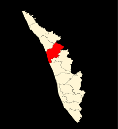

 Zone: South Telephone Access Code: +91 483 Malappuram district has a rich and vibrant history. The military headquarters of the Zamorins of Kozhikode since ancient times, this district was the site for many of the Mappila Revolts (uprising against the British East India Company in Kerala) between 1792 and 1921. Malappuram literally means a land atop hills and the region is enriched by three great rivers flowing through it - the Chaliyar, Kadalundi and the Bharathapuzha. Malappuram has made numerous contributions to the cultural heritage of Kerala. A famous centre for Hindu-Vedic learning and Islamic philosophy, the temples and mosques of this region are well known for their spectacular festivals.Along with historic monuments and diverse natural attractions, a range of cultural and ritual art forms add to its charm as a destination.